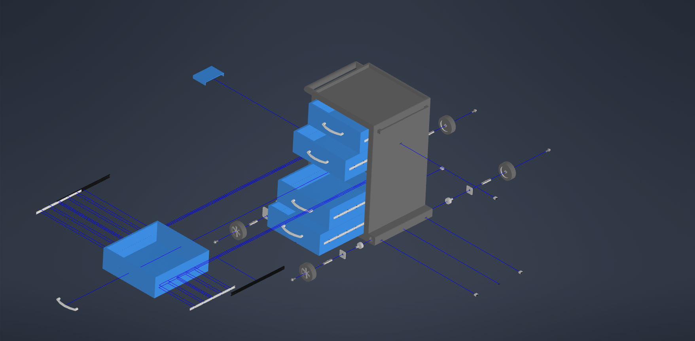
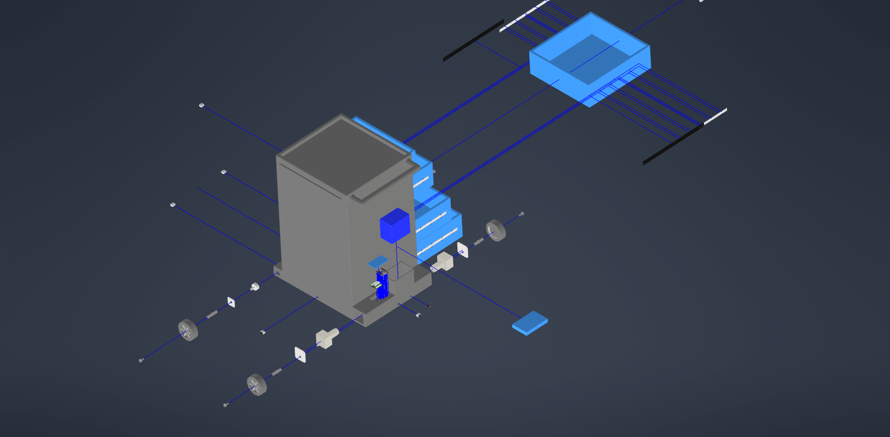
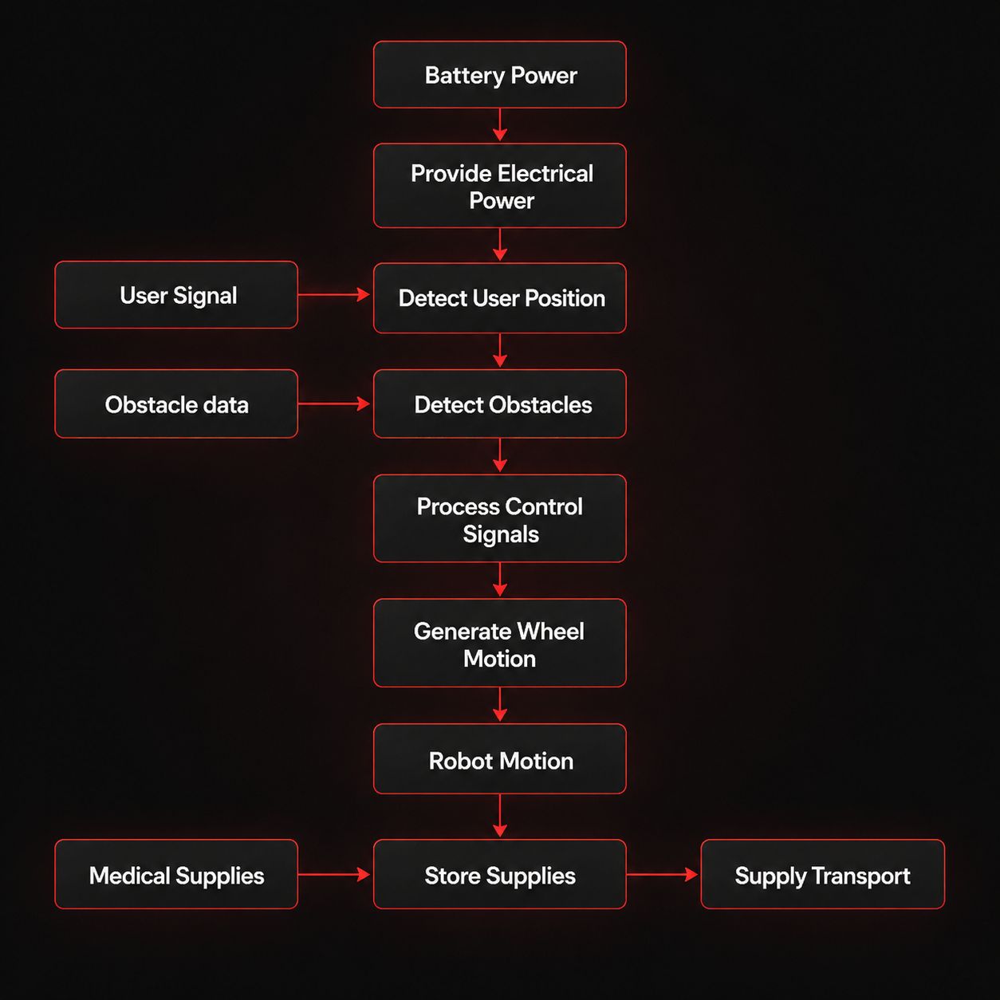

Project Visuals
CAD model & system design
Click any image to view full size — use arrows or keyboard to browse.

3D CAD model — cabinet structure with differential drive base and drawer system

[ carebot-exploded-view-1.png not found ]Exploded CAD Front view — cabinet, drawer system, drive base, wheels, and electronics

[ carebot-exploded-view-2.png not found ]Exploded CAD Rear view — cabinet, drawer system, drive base, wheels, and electronics

[ carebot-functional-structure.png not found ]Functional structure diagram and concept sketches from the VDI 2221 conceptualization phase